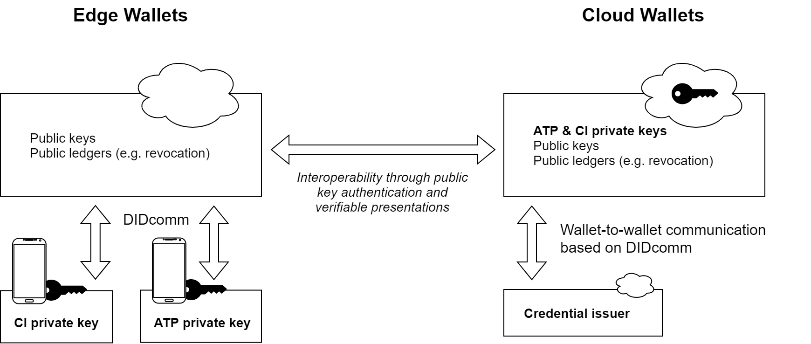
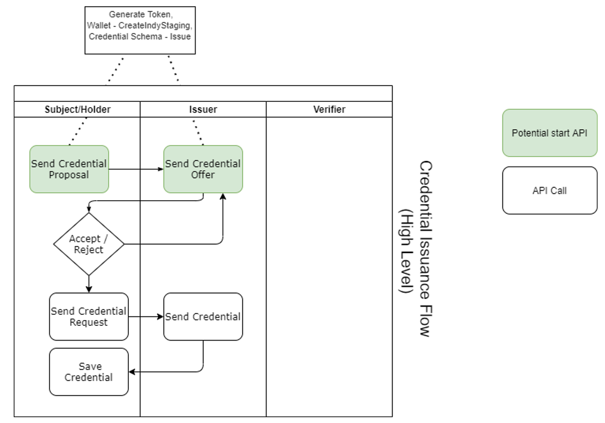

Copyright © 2023 Named editors. Contributors to the Open Credentialing Initiative.
This section describes the status of this document at the time of its publication. Other documents may supersede this document.
This is a living document developed by OCl's Founding Members with input from other OCI Charter Members, DSCSA Trading Partners, Authorities, Solution Providers, Associations, Standards Bodies and others interested in implementing and contributing to the betterment of the W3C Verifiable Credentials architecture piloted by the DSCSA ATP Pilot. It is anticipated that the contents of this document will be reviewed and updated to address feedback related to compliance, business operations, W3C and GS1 Standards, interoperability, changing legislation, regulations, and policy.
The purpose of this document is to clearly outline the conformance criteria for service providers who wish to be recognized by the Open Credentialing Initiative (OCI) as Digital Wallet providers.
The publication is intended for Digital Wallet implementers or service providers who wish to be recognized by
the Open Credentialing Initiative (OCI) as Digital Wallet Providers in the OCI interoperable environment.
This document specifies the Conformance Criteria for a Digital Wallet Provider. It includes definitions
of key terms and concepts, W3C standards requirements, technical wallet implementation requirements, and requirements
for integration with VRS providers. For a general introduction to OCI, please refer to our Getting Started guide or the Open Credentialing Initiative website.
The dark side of the digital world is professionalizing its malicious activities at an amazing speed, launching sophisticated cyberattacks to compromise endpoints and sell stolen access credentials through Initial Access Brokers to others who then launch ransomware attacks on (supply chain) systems or steal, sell and manipulate internal information. The biggest struggle for API security lies with the building blocks of authentication and authorization. This thread has grown in importance with APIs' increased access to critical data in the US Pharma supply chain.
OCI leverages decentralized public key infrastructure (PKI) and credentials to protect Product Identifier (PI) verification API calls by providing tools to sign PI verification request and response messages while blending these messages with Stakeholder credentials. With these tools in place, a responder API can check the counterparty’s ATP license status (or equivalent) prior to responding to a PI verification call. As a result, only authorized parties with valid Stakeholder credentials will receive a response. OCI applies the same mechanism for the verification of the response origin.
Digital Wallet infrastructure is used to protect the private key, acquire, store and exchange credentials of a given supply chain actor. As these wallets are integrated with the GS1 Lightweight Messaging Standard for Verification of Product Identifiers and VRS infrastructure, they allow a US DSCSA-compliant implementation of the ATP and related regulatory requirements. Decentralized PKI mechanisms of the system are designed to mitigate reuse of API access credentials, which further contributes to improved security.
The primary purpose of this publication is to communicate Conformance Criteria. Conformance Criteria establish the trusted processes that are to be followed for an organization to be recognized and accepted by OCI as a Digital Wallet provider. This ensures interoperability among all OCI-compliant service providers.
Adherence is important for:
The following keywords indicate the precedence and general rigidity of a given conformance criterion, and are to be interpreted as:
The following terms and abbreviations appear throughout this Digital Wallet Conformance Criteria:
Digital Wallet Providers desiring to participate in DSCSA initiatives that were designed, tested, and proven by OCI can begin by understanding and embracing the underlying open standards for decentralized identifiers (W3C), verifiable credentials (W3C), well-known standards (IETF), protocol standards (Hyperledger, Decentralized Identity Foundation), and Lightweight Messaging Standard (GS1). These standards serve as anchoring points for OCI to establish an identity ecosystem that is fit for purpose.
The World Wide Web Consortium (W3C) is an international community where member organizations, full-time staff, and the public work together to develop Web standards. One of the many standards put forth by the consortium establishes generally accepted specifications for decentralized identifiers (DIDs) for verifiable credentials (VCs).
The abstract from the W3C website Verifiable Credentials Data Model page states:
“Decentralized identifiers (DIDs) are a new type of identifier that enables verifiable, decentralized digital identity. A DID refers to any subject (e.g., a person, organization, thing, data model, abstract entity, etc.) as determined by the controller of the DID. In contrast to typical, federated identifiers, DIDs have been designed so that they may be decoupled from centralized registries, identity providers, and certificate authorities. Specifically, while other parties might be used to help enable the discovery of information related to a DID, the design enables the controller of a DID to prove control over it without requiring permission from any other party. DIDs are URIs that associate a DID subject with a DID document allowing trustable interactions associated with that subject.
Each DID document can express cryptographic material, verification methods, or services, which provide a set of mechanisms enabling a DID controller to prove control of the DID. Services enable trusted interactions associated with the DID subject. A DID might provide the means to return the DID subject itself, if the DID subject is an information resource such as a data model. This document specifies the DID syntax, a common data model, core properties, serialized representations, DID operations, and an explanation of the process of resolving DIDs to the resources that they represent.”
For more information, please visit the Decentralized Identifiers page on the W3C website.
The abstract from the W3C website Verifiable Credentials Data Model page states:
“Credentials are a part of our daily lives; driver's licenses are used to assert that we are capable of operating a motor vehicle, university degrees can be used to assert our level of education, and government-issued passports enable us to travel between countries. This specification provides a mechanism to express these sorts of credentials on the Web in a way that is cryptographically secure, privacy respecting, and machine-verifiable.”
For more information, please visit the Verifiable Credentials page on the W3C website.
To establish trust, verifiability, and auditability among the trading partners involved in the OCI ecosystem, an open, interoperable, portable, standards-based, decentralized identity framework is essential.
OCI uses decentralized public key infrastructure (PKI) technology for Digital Wallets and for electronically signed verifiable credentials about the enterprises involved in the ATP verification process.
The OCI conformance criteria are based on a set of identity standards (W3C standards, IETF standards, Hyperledger Aries), open API standards, and existing industry standards for PI message exchange (GS1 Lightweight Messaging Standard for Verification of Product Identifiers).
It shall be noted that the OCI Digital Wallet Conformance Criteria distinguishes between Cloud- and Edge wallets as illustrated below.
This diagram shows the basic differences between edge and Cloud wallet implementations. While public keys and other data are stored on the cloud, the private keys of Trading Partners and Credential Issuers may be located either on a local edge device, or managed by a (Cloud wallet) provider. Interoperability occurs at the level of verifiable presentations created and exchanged between wallets. Where potential interoperability between multiple Wallet Providers and Credential Issuers is desired, the OCI Digital Wallet Conformance Criteria include specific DIDcomm requirements.
The following is a high-level overview of the technologies used by Digital Wallet providers as part of this specification:
| Component | Realization and References |
|---|---|
| Identifiers | W3C Decentralized Identifiers (DIDs) v1.0 (W3C DIDs) |
| Verifiable Data Registry & DID Methods | Use of a common set of DID Methods endorsed by OCI (e.g. ETHR DID Method Specification, did:web Method Specification) |
| DID Resolution | Decentralized Identifier Resolution (DID Resolution) using the DIF universal resolver, SpruceID, or another valid resolver. |
| Vetted Credential Issuer & Root of Trust | Registry for vetted, trusted Credential Issuer maintained by OCI |
| Credential Structure | W3C Verifiable Credentials Data Model 1.0 (W3C VCs) |
| Credential Serialization & Schemas | OCI Credential Schema Definition (OCI Credential Schemas) |
| Signatures & Verification | Cryptographic primitives used for VC creation/verification, JWT creation/verification and wallet-to-wallet communication. |
| Wallet to Wallet communication (for cloud wallets) |
Hyperledger Aries RFCs Issue Credential Protocol v2.
Decentralized Identity Foundation specs. |
| Revocation | Directory Service (LDAP) based mechanism for revoking Verifiable Credentials (vc-status-2021-ldap) |
A DID is a globally unique identifier developed specifically for decentralized systems as defined by the W3C DID specification. DIDs enable interoperable decentralized self-sovereign identity management using standardized Digital Wallets.
Implementers of Digital Wallets for OCI credentialing SHALL follow the specification on how DID documents are created and used.
DID documents have the following characteristics:
DID methods are the mechanism by which a particular type of DID and its associated DID document are created, resolved, updated, and deactivated. DID methods are defined using separate DID method specifications as described in the following chapter.
To be resolvable to DID documents, DIDs are typically recorded on an underlying system or network of some kind. Regardless of the specific technology used, any such system that facilitates the creation, verification, updating, and/or deactivation of decentralized identifiers and DID documents is called a verifiable data registry (VDR). A verifiable data registry might also be used for other cryptographically-verifiable data structures such as verifiable credentials. Examples for VDRs include distributed ledgers, decentralized file systems, databases of any kind, peer-to-peer networks, and other forms of trusted data storage.
There are multiple VDRs used in today’s DID implementations that support different security protocols, discoverability, and linkage to existing trust networks. To avoid complexity and enable interoperability, OCI supports selected DID methods and establishes a process for maintaining a DID method endorsement.
To ensure resolution of DID methods, Digital Wallet Providers SHALL implement and support all DID methods endorsed by OCI. OCI endorses the following DID methods:
| # | DID Method | Reference | VDR | OCI Credentialing Actor |
|---|---|---|---|---|
| 1 | did:ethr | did:ethr Method Specification | Ethereum Mainnet | Trading Partner |
| 2 | did:web | did:web Method Specification | Secure data store maintained by the implementer | Credentialing Issuer |
Digital Wallet Providers SHALL integrate DID resolver functionality for resolving DID documents. The DID resolver SHALL support all DID methods endorsed by the OCI as defined in Table 3 in section 3.1.2. It SHALL be a trusted open source DID resolver with broad community participation (e.g. DIF Universal Resolver or DIDKit) vetted against the non-functional conformance criteria outlined in this document. Wallet providers SHALL NOT use public instances of resolvers, instead using their own implementations.
Credential Issuers verify Stakeholder identity and activity status (e.g. licensure). They are proving verifiable credentials within their trust domain and are therefore root of trust in their respective trust domain.
To qualify for an OCI Credential Issuer, the Credential Issuer shall fulfill the conformance criteria for Credential Issuers defined by OCI.
To enable Digital Wallet Providers to accept credentials issued from a vetted Credential Issuer only, OCI SHALL implement and maintain a Trusted Credential Issuer registry (see next section). Digital Wallet Providers SHALL be able to process and verify credentials issued by any vetted Credential Issuer that is endorsed via the specified OCI registry.
Credential Issuers SHALL use a DID method implementation that supports a Well-Known Uniform Resource Identifier [[RFC8615]] to make the identifiers well-known among the OCI trading partner.
To provide the well-known mechanism, Digital Wallet Providers SHALL support the DID:web method for Credential Issuers.
Digital Wallet Providers SHALL put controls in place to ensure that DSCSA Stakeholder credentials are from vetted Credential Issuers only.
DNS presents many of the attack vectors that enable active security and privacy attacks on the did:web method and it's important that implementers address these concerns via proper configuration of DNS. For example, without proper security of the DNS resolution via DNS over HTTPS it's possible for active attackers to intercept the result of the DNS resolution via a Man in the Middle attack which would point at a malicious server with the incorrect DID Document.
Implementers should be aware of issues presented by Spoofed DNS records where the record returned by a malicious DNS Server is inauthentic and allows the record to be pointed at a malicious server which contains a different DID Document. To prevent this type of issue, wallet implementers and verifiable credential issuers SHALL use DNSSEC which is defined in [[RFC4033]], [[RFC4034]], and [[RFC4035]].
As described above, the trust placed in Credential Issuers is a key aspect of the OCI ecosystem. In order to ensure that this key role is not exploited, the trust is anchored in a decentralized and cryptographically verifiable way. The crucial information of which issuers, who have satisfied OCI’s Credential Issuer Conformance Criteria, are to be trusted is stored in the Trusted Issuer Registry, which is managed through Ethereum Smart Contracts.
OCI maintains multiple versions of the Trusted Issuer Registry for production and demo/testing purposes. You can find the deployed contracts at these addresses:
The Goerli Sandbox Contract has been modified to not require any OCI mechanisms to add and remove trusted issuer DIDs. This may be used for testing by anyone who is interested.
In addition to readily deployed versions of the contracts, OCI has also published the source code as well as implementation guidelines on GitHub: Trusted Issuer Registry.
At each generation and verification of a Verifiable Presentation, a Digital Wallet SHALL check if the respective Verifiable Credential has indeed been issued by a Trusted Issuer. To accomplish this, a wallet SHALL call one of the following contract method signatures to verify the status of the Credential Issuer:
function getTrustedIssuers() public view returns (string[] memory)
["did:ethr:0xf3beac30c498d9e26865f34fcaa57dbb935b0d74", "did:web:example.com", "did:key:0c498d9e26865f34fcaa50c498d9e26865f34fcaa5"]
function isTrustedIssuer(string memory _DID) public view returns (bool)
true/false
By deriving this information from the contract, the Digital Wallet SHALL check that the issuer stated within the claims of the respective Stakeholder credential matches one of those trusted issuers recorded in the Trusted Issuer Registry.
The Digital Wallet SHALL have measures in place to request other Ethereum nodes in case the requested node is down or does not respond in a reasonable amount of time.
Working groups at the W3C author, host, and maintain the W3C Verifiable Credential Data Model 1.0 specification. This W3C VC Standard is now a W3C recommendation (the most mature stage of the W3C standards process). VCs are issued for identifiers that may be associated with cryptographic operations, be they DIDs, self-certifying identifiers, or legacy identities backed with traditional PKI. The structure of a VC is an important component of interoperability.
CI relies on an implementation of a common standard for the credential structure. Digital Wallet Providers SHALL implement Verifiable Credential Data Model 1.0.
At time of writing, there are only early, non-standard and experimental implementations that combine traditional PKI with VCs and DIDs. Therefore Digital Wallet Providers SHALL implement DIDs as cryptographic identifiers. It shall be understood that DIDs can be blended with X.509 DEA signing certificates within the Identity Verification Process in the form of wrapped or nested credentials.
Credentials that are issued by the Credential Issuer are created in accordance with the W3C JSON-LD format for schema serialization. To ensure processing, validation, and interpretation of verifiable credentials by different implementers, JSON-LD schemas for identity and Stakeholder credentials are introduced. Digital Wallet Providers SHALL support the JSON-LD format and SHALL support JSON-LD schema validation.
The Digital Wallet provider SHALL have mechanisms in place to support multiple valid versions of credential schemas endorsed and published by OCI. Such a mechanism will allow handling transition periods when new credential schema versions are released and the industry has to adopt changes to schemas. It shall be understood that there can be multiple schema versions active, decommissioned, and revised versions can have an expiration date. Decommissioned schema versions SHALL return an error by the ATP credential verification API.
OCI documents and publishes approved (active), revised, and decommissioned versions of the Identity and Stakeholder credential schemas on https://open-credentialing-initiative.github.io/schemas/.
Digital Wallet Providers SHALL support the OCI approved credential schema for processing, validation, and interpretation that are published on the OCI Github for:
Digital Wallet Providers SHALL be capable of managing the Identity Credential, and of managing at least one of the three Stakeholder Credential types indicated above.
Electronic signatures are captured in three places during a digital transaction to verify its authorization. The Digital Wallet Provider SHALL implement the following signature suites and algorithms for signing and verification:
| # | Signing Entity | Use Cases | Proof and Verification |
|---|---|---|---|
| 1 | Credential Issuer: Credential Issuance |
Issuance of a Verifiable Credential from Credential Issuer’s wallet to a Trading Partner’s wallet via DIDComm protocol i.e., “issue-credential” v2.0.
|
Verifiable Credential’s proof SHALL be generated and verified in conformance with Ed25519 Signature 2018 Linked-Data Signature Suite. |
| 2 | Trading Partner: ATP PI Verify Workflow | Generation and Verification of a Verifiable Presentation that proves the possession of “DSCSA ATP Credential” in the context of the GS1 Lightweight Messaging Standard. | Verifiable Presentations SHALL be encoded as JSON Web Tokens [[RFC7519]] per vc-data-model and signed using JSON Web Algorithm ES256K and verified accordingly. See [[RFC7518]] Section 3 for more information on the ES256K Digital Signature. |
| 3 | Trading Partner: Direct Presentation Exchange |
Presentation of a Verifiable Presentation between Stakeholder wallets or from Stakeholder’s wallet to Credential Issuer’s wallet via DIDComm protocol i.e., “present-proof” v2.0.
|
Verifiable Presentation’s proof SHALL be generated and verified in conformance with JSON Web Signature 2020 Linked-Data Signature Suite. |
Communication between Credential Issuer’s Digital Wallet and Stakeholder’s Digital Wallet or between trading parties for the exchange of credentials may be required to issue and exchange credentials.
The DIDComm Messaging Specification is a secure method for credential issuance based on a set of interoperable and DID method-agnostic Aries RFCs are working items of the Hyperledger and Decentralized Identity Foundation (DIF) that define technical standards specifications. It may be used to support wallet-to-wallet communication between organizations (e.g. Credential Issuer and Digital Wallet Provider), or facilitate secure message exchange within an organization.
Digital Wallet Providers SHALL implement DIDComm capabilities to meet the functional requirements outlined in the OCI Digital Wallet Conformance Criteria.
This high-level chart may be used as guidance for the subject workflow for credential issuance and exchange.
Beyond this, the DSCSA Stakeholder SHOULD be able to exchange Verifiable Presentations of their Identity Credentials with other Stakeholders using DIDcomm. This is important when a trading partner receives a Stakeholder Credential from a previously unknown trading partner and wishes to request the corresponding identity Credential. Having established a trusted communication channel between Stakeholder wallets, future use cases that require exchanging credentials can be facilitated more easily.
| # | Specification Source | Specifications |
|---|---|---|
| 1 | Hyperledger Aries RFCs | |
| 2 | Decentralized Identity Foundation Specifications |
OCI can potentially support multiple methods for communicating when a Credential has been revoked. At the current stage, OCI supports a proven revocation management method based on LDAP Credential Revocation Lists (CRLs). Consequently, Digital Wallet Providers SHALL implement the OCI Directory Service (LDAP)-based mechanism for determining if a Verifiable Credential has been revoked (vc-status-2021-ldap).
A Digital Wallet Provider MAY implement a caching mechanism for Credential revocation data to cache LDAP data for 24 hours. Credential revocation data SHALL not be older than 24 hours during normal operations of the OCI Directory Service.
It shall be understood that existing cached data can be used when the OCI Directory Service is not available for an update of the local cache due to a technical downtime. A Digital Wallet Provider SHALL store communication request data when OCI Directory Service is not available to establish an audit trail and document why revocation data older than 24 hours were potentially used for checking the revocation status over the time period of the OCI Directory Service downtime.
To mitigate man-in-the-middle attack vectors, Credential Issuer and Digital Identity providers SHALL implement LDAPS, which is LDAP secured by communication over Transport Layer Security (TLS) protocol.
OCI wallet providers that provide a cloud wallet SHALL implement the interfaces and Open API integration defined below.
| ID | Specification Source | Bidirectional Communication |
|---|---|---|
| IF001 | Interface for Human Users | Digital Wallet Solution ⬄ Wallet Administrator |
| IF002 | API Integration with VRS Provider | Digital Wallet Solution ⬄ VRS Provider |
| IF003 | API Integration with Revocation DB | Digital Wallet Solution ⬄ Revocation DB of Credential Issuer |
| IF004 | API Integration with VDR | Digital Wallet Solution ⬄ Verifiable Data Registry (VDR) |
| IF005 | API Integration with Credential Issuer | Digital Wallet Solution ⬄ Credential Issuer |
| ID | IF001 |
| Description | Interface for Human Users |
| Type | Manual interface, authentication via Two-Factor Authentication (2FA), Connection: HTTPS |
| Information flow Direction | Bidirectional: Human User ⬄ Enterprise Digital Wallet |
| Input Data | Enterprise Digital Wallet Administration Data, User and Role Management Data, Onboarding Data for Credential acquisition |
| Output Data | Stakeholder Monitoring Data (list of connections with Stakeholder counterparties, identity credentials of Stakeholder counterparties, status of VPs, Stakeholder validation of individual PI verify requests), Wallet Administration Data (users and roles, my company/organization identity and Stakeholder credentials). |
| ID | IF002 |
| Description | API Integration with VRS Provider, API Interface for creating and verifying Stakeholder Credential Presentations (See Section 5.1.7 Proof & Verifications ) |
| OpenAPI Specification | https://open-credentialing-initiative.github.io/api-specifications/v2.0.0/#/VerifiablePresentation/postVerfiablePresentationVerification> |
| Type | REST API, authentication via OAuth2.0 bearer token, Encryption: SSL TLS v1.2+, Connection: REST on HTTPS |
| Information flow Direction | Bidirectional, VRS ⬄ Enterprise Digital Wallet |
| Input Data | Request creation of Stakeholder Credential Presentation, Verify Stakeholder Credential Presentation |
| Output Data | Stakeholder Credential Presentation (JWT), Stakeholder credential presentation verification response. |
| ID | IF003 |
| Description | API Integration with Credential Issuer Revocation Database |
| Specification | https://spherity.github.io/vc-status-2021-ldap/> |
| Type | REST API, public API with no authentication, Encryption: SSL TLS v1.2+, Connection: REST on HTTPS |
| Information flow Direction | Bidirectional, Credential Issuer Revocation DB ⬄ Enterprise Digital Wallet |
| Input Data | Request VC revocation status |
| Output Data | Response VC revocation status |
| ID | IF004 |
| Description | DID Transactions with DID Registry on Public Ledger, DID document read transactions via a universal resolver |
| Type | DLT RPC calls, VDR , no authentication required |
| Information flow Direction | Bidirectional, VDR ⬄ Enterprise Digital Wallet |
| Input Data | DID transactions: creation, revocation, update |
| Output Data | DID transaction (creation, revocation, update) confirmations or DID documents |
| ID | IF005 |
| Description | Requesting verifiable credential issuance from Credential Issuer |
| Type | REST API, wallet-to-wallet communication |
| Information flow Direction | Bidirectional, Credential Issuer Wallet ⬄ Enterprise Digital Wallet, Encryption: SSL TLS v1.2+, Connection: Issuance of Credentials via DIDcomm V2 with Encrypted Messaging Envelope as specified in the DIDComm Messaging Specification based on Aries Protocols |
| Input Data | Request identity or Stakeholder credential issuance |
| Output Data | Identity or Stakeholder Credential |
APIs implemented for IF002 SHALL follow the OCI OpenAPI specification for Digital Wallet Providers. See OpenAPI specification for further details.
The Digital Wallet Provider SHALL provide API concepts for:
Implementers MUST conform to [[RFC7231]] and [[RFC2616]] when processing and returning HTTP Status Codes to a requesting client. From RFC7231 Section 6 - Response Status Codes:
- 1xx (Informational): The request was received, continuing process
- 2xx (Successful): The request was successfully received, understood, and accepted
- 3xx (Redirection): Further action needs to be taken in order to complete the request
- 4xx (Client Error): The request contains bad syntax or cannot be fulfilled
- 5xx (Server Error): The server failed to fulfill an apparently valid request
A solution SHALL integrate an Identity and Access Management (IAM) solution for User and Role Management into the Digital Wallet infrastructure. A solution SHALL support user on-boarding, off-boarding and user Credential management features and workflows.
The wallet MAY be integrated with existing trading partner identity and access management (IAM) solutions. Implementers of solutions for smaller trading partners MAY simplify the user management solution by merging administrator and user roles, as users and administrators can be the same person.
A solution SHALL provide a process workflow for acquiring identity and at least one of the three Stakeholder credential types from a vetted Credential Issuer.
A solution SHOULD provide a feature for users of the Stakeholder to request and log identity credentials from another counterparty.
A solution SHALL provide a data store for storing identity and Stakeholder credentials and transaction log data to support analysis, archive and auditing requirements for DSCSA.
| ID | NFR001 |
| NFR Type | Authentication & Authorization |
| Description | Only an authorized user can manually access the Digital Wallet application. |
| Rationale |
|
| Conformance Criteria | Two-Factor Authentication (2FA) SHOULD be implemented. For operational systems, single sign-on with enterprise IAMs or identity providers MAY be integrated. Role-based access control MAY be configured for user role-based access. |
| Measurement | Above-mentioned authentication mechanisms when users access the application |
| ID | NFR002 |
| NFR Type | Security - Data Authorization & Encryption |
| Description | Data at rest and in transit shall be protected |
| Rationale | Any sensitive data must be encrypted and protected |
| Conformance Criteria |
|
| Measurement | Functional testing |
| ID | NFR003 |
| NFR Type | Security - Non-repudiation |
| Description | The system must prevent the initiator of a transaction from later disputing the creation of a given transaction. |
| Rationale | Standard pharma compliance requirement |
| Conformance Criteria | Solution SHOULD implement an audit trail including non-repudiable digital signatures for all Stakeholder Credential transactions realized on the system. User authentication and activities SHALL be logged. Audit trail SHALL be available for user inspection. |
| Measurement | Application security testing against these features documented in User Acceptance Testing (UAT). Review of operational audit logs created by the solution and compared with user activity in a test scenario. |
| ID | NFR004 |
| NFR Type | Security - Key Management & Rotation |
| Description | Key rotation best practices applied to regularly change signing and encryption keys. |
| Rationale | Protect application against theft of signing keys |
| Conformance Criteria |
|
| Measurement | Application security testing against these features |
| ID | NFR005 |
| NFR Type | Security – Platform & Network Security |
| Description | The system must adhere to platform security requirements. |
| Rationale | Cloud architecture should ensure VRS and Stakeholder systems are secured from attack. Since the system handles business critical data, the measures taken to protect data need to be defined. Privileged access to system components is minimized and strictly controlled. |
| Conformance Criteria |
Security is critical to a solution deployed as Cloud Service. Implementers SHALL focus on security features:
|
| Measurement | Application security testing against these features |
| ID | NFR006 |
| NFR Type | High Availability |
| Description | Digital Wallet and credentialing solution systems must be resilient to single points of failure or outages |
| Rationale | When integrated into operations, Stakeholder credentialing is a critical business system |
| Conformance Criteria | DevOps infrastructure and cloud services SHALL be designed in a redundant manner so that the system will continue to work in production mode (i.e., no degraded performance) if one component fails. Digital Wallet Providers SHOULD aim for 99.5% availability |
| Measurement | Infrastructure designed for high availability, resilience and failover with ability to monitor and report on availability |
| ID | NFR007 |
| NFR Type | Maximum system response time |
| Description | The maximum time taken by the system as a whole to send any information back to the end user who triggered a query (and out of the transit/transmission overhead). Average time for performing the two API calls to generate and verify Stakeholder VPs SHALL be in total less than 1500 ms. Maximum time for both calls SHALL be in total less than 3000 ms. |
| Rationale | Solution SHOULD be easily scalable to handle high volumes of Product Identity Verification Requests and Responses as well as a high number of trading partners without making changes to the overall architecture. |
| Conformance Criteria | Solution SHALL provide low-latency APIs. Solution MAY apply caching methods (e.g., revocation lists, DID documents, credential verification events) where technically and legally possible to reduce throughput times of processing the APIs. Cached data SHALL be valid no longer than 48 hours. |
| Measurement | API performance designed for low-latency with built-in ability to measure performance, throughput and latency. |
| ID | NFR008 |
| NFR Type | Disaster recovery |
| Description | The solution must survive a critical data center incident and large scale outage events. |
| Rationale | ISMS Standards dictate disaster recovery solution |
| Conformance Criteria | The solution SHOULD be replicated in an alternative datacenter. It SHOULD provide back-up and restore mechanisms. |
| Measurement | Recurring disaster recovery tests |
| ID | NFR009 |
| NFR Type | Audit Requirements |
| Description | The solution must be able to support audit log requirements. |
| Rationale | Data and industry regulations require support for investigations and compliance |
| Conformance Criteria | Solution SHALL provide audit logs of interface access as well as of generation and verification of verifiable presentations. Solution SHALL log corrUUID so that transactions are correlatable across systems and wallets of the trading partners. |
| Measurement | Testing of audit logs. Checking that audit logs can be retrieved, are accessible and can be processed. |
| ID | NFR010 |
| NFR Type | Archiving |
| Description | The solution can support audit archiving requirements. |
| Rationale | Data and industry regulations require support for investigations and compliance with data archiving regulations. |
| Conformance Criteria | The Wallet Provider SHALL keep detailed records of all VP generation and verification events as well as monitoring activities for a period of not less than six (6) years. These detailed records constitute an audit trail to be used in the event of an investigation into credential-related activities of the credential holder |
| Measurement | Testing of archiving features. Checking that archived data can be retrieved, are accessible and can be processed. |
At time of publication, the use of Authority and ATP Equivalent credentials within the VRS is being discussed among relevant stakeholder groups. It should be noted that the OpenAPI specification accommodates any OCI-compliant credential type.
| API Name | Generate Stakeholder Verifiable Presentation of Stakeholder Credential |
| Description | The HTTP endpoint used to generate a Verifiable Presentation of a DSCSA Stakeholder Credential. |
| OpenAPI Specification | https://open-credentialing-initiative.github.io/api-specifications/v2.0.0/#/VerifiablePresentation/postVerfiablePresentationGeneration |
| Request Body |
The Digital Wallet SHALL provide an API consuming a JSON request body with the following values:
Note: It shall be understood that a counterparty VRS can be unavailable at any given time. If this is the case, the first VRS provider needs to regenerate a JWT token for resending the PI verify request to the counterparty VRS at a later time to retry the PI verification request. |
| Request Parameters |
The Digital Wallet SHALL provide the following OPTIONAL query request parameters. During the generation of a VP these checks MAY be omitted and only be used for other use cases. In standard mode of operations verifiable presentations can be generated without any additional checks. Checks will always be done on the receiving side. Therefore and to reuse overall latency checks can be neglected on the sender side. The following optional checks can be done by the sender to check that the presentation generation is working properly and the underlying credentials are valid (e.g. for Periodical checking the validity of a Credential):
|
| Response Body |
Depending on whether the VP generation is successful or not, The Digital Wallet SHALL either return a response body representing positive or negative generation. For Positive Generation Response, the response body SHALL contain the following fields:
For Negative Generation Response, the response body SHALL contain the following fields:
|
| HTTP Status Codes |
The Digital Wallet SHALL return the following HTTP status codes and descriptions in accordance to section 4.2 Cloud Wallet Interfaces and Open API Integration:
|
| API Name | Verify Stakeholder Verifiable Presentation of Stakeholder Credential |
| Description | To check the authenticity, integrity, revocation & expiration status of a Verifiable Presentation of an Stakeholder Credential. |
| OpenAPI Specification | https://open-credentialing-initiative.github.io/api-specifications/v2.0.0/#/VerifiablePresentation/postVerfiablePresentationVerification |
| Request Body |
The Digital Wallet SHALL provide an API accepting a request body with the following values:
|
| Request Parameters |
None. |
| Response Body |
Depending on whether the verification is successful or not, the Digital Wallet SHALL either return a response body representing positive verification or negative verification. For Positive Verification Response, the response body SHALL contain the following fields:
For Negative Verification Response, the response body SHALL contain the following fields:
|
| HTTP Status Codes |
The Digital Wallet SHALL return the following HTTP status codes and descriptions in accordance to 4.2 Cloud Wallet Interfaces and Open API Integration:
|
Digital Wallet Providers SHALL return the following error codes if a verification (or if applicable in the generation) fails due to certain scenarios. The above defined response data structure SHALL be used to transport the code to a requesting client. An implementer SHALL use the field ‘errorCodes’ for transporting one (1) or multiple codes. It is RECOMMENDED to use the field ‘errors’ for transporting human readable error messages further explaining the reason why a verification has failed.
Given these scenarios, the following error codes MUST be included in the ‘errorCodes’ field in the verification (or if applicable in the generation) response. It is RECOMMENDED to include multiple errors in the response as applicable.
It was decided by OCI members not to use the verifiable presentation approach employing a nonce created by the verifier as developed in the pilot phase, but instead to use a JWT with a given lifetime that then defines the expiration date/time of the JWT. The verifiable presentation approach of the ATP pilot is documented in the pilot documentation. This approach was designed to fulfill low-latency requirements. The rationale behind this decision is based on confidentiality considerations on an overall PI verification system level.
The JWT VP SHALL have a lifetime (or time to live) attribute. The lifetime for JWT VPs used in PI verifications SHALL not be longer than 5 minutes or 300,000 ms. The JWT VP verification API will use this VP lifetime threshold to check if a VP is expired. This VP lifetime threshold will be added to the issuance date of the VP, iat attribute of VP, to determine whether the VP verification time is within the acceptable time window for using the generated VP.
Looking to the future, OCI will seek to leverage DIDcomm protocols to enable full message signing and related cryptographic protections. For more information, readers are encouraged to access the PDG Foundational Blueprint for 2023 Interoperability Chapter 5: Tracing Architecture Functional Design, particularly Figure 15: Trace Network Implementation Maturity.
It is RECOMMENDED that the Digital Wallet provider offers the following documentation to support any validation process:
The Digital Wallet Provider SHALL establish a process to create installation qualification documentation (IQ). Digital Wallet Providers SHALL provide individual IQ documentation to trading partners during the onboarding process. IQ should instruct about how the Digital Wallet components are installed and integrated correctly. This includes documentation of the software deployment process, installed system components and the host environments.
The Digital Wallet provider SHOULD enable independent assurance over business and information technology controls. This MAY be in the form of acquiring a Service Organization Controls (SOC) Report based on the American Institute of Certified Public Accountants (AICPA) Statement on Standards for Attestation Engagements No. 18 (SSAE 18) (“SOC Report”). Such SOC Report generally covers all controls and comes in the form of a SOC 1 Type II and SOC 2 Type II report. A further option is to have a certified Information Security Management System according to International Standard Organization (ISO) 27001 in place.